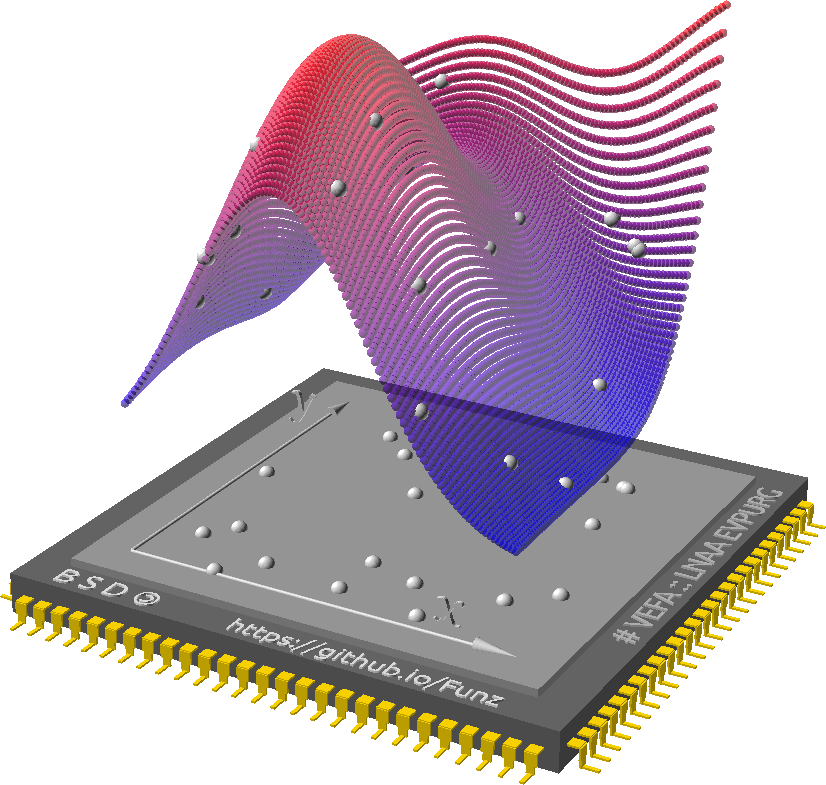

TL;DR
Parametric scientific computing ?
Funz eases this "functional" wrapping of your simulation.
- Take a "parametrized" input file (contains
$x,$y,... replacing some numerical values),- Define values taken by these parameter (or let a dedicated algorithm do),
- Run calculations on remote ressources,
- Parse results & analyse.

Examples ?
Funz makes your simulations callable as functions for any of cmd.exe / bash / python / R / Java:
- From Excel spreadsheet "sheet.xlsx", get cell commented with "=total" for each 10 different values of cell commented with "$income": {% highlight bash %}Funz.bat Run -m Excel -if sheet.xlsx -iv income=10,20,30,35,40,42,45,47,50,52 -oe total{% endhighlight %}
- Search convection coefficient which leads to a minimal temperature of 25.5 degrees with OpenModelica PDE solver: {% highlight bash %}Funz.sh RunDesign -m OpenModelica -if NewtonCooling.mo -iv convection=[0.5,1.0] -oe "min(T)" -d Brent -do ytarget=25.5{% endhighlight %}
- Build a response surface of MySimulator for
x1in[-5,5]andx2in[-5,5]: {% highlight python %}runFile("Funz.py") Funz_init() X = {'x1':np.arange(-5, 5, 0.25),'x2':np.arange(-5, 5, 0.25)} y = Funz_Run(model="MySimulator",input_files=["inputfile1","inputfile2"],input_variables= X ,is_factorial=True)['y'] # mplt.plot_surface(X['x1'], X['x2'], y){% endhighlight %}- Propagate
x1as uniform random andx2as normal random uncertainties through MySimulator: {% highlight r %}source("Funz.R") Funz.init() hist( Funz.Run(model="MySimulator",input.files=c("inputfile1","inputfile2"),input.variables= list(x1=runif(100),x2=rnorm(100)) )['y'] ){% endhighlight %}- Chain multi-physics simulations
- Identify the most influent input parameters
- Max/minimize simulation output value
- Build inverse model
Overview
Wrapping
- A standardized execution script (properly exiting when calcualtion failed),
- A set of reserved characters (like '$') for input files parametrization,
- Some regular expression to extract output values of interest.
Features
- Parse & compile input files with given parametric syntax,
- Launch remote execution of each input combination given (async on dedicated TCP channel),
- Call external algorithm to drive calculation parameters values,
- Monitor & restart failed calculations (blacklisting unsuitable computers),
- Store & parse output results.
Extensibility
- Wrapper for any simulation software (holds I/O files, ASCII & common formats: HDF5 NetCDF XML JSON),
- Algorithm for design of experiments (supports definition of input values regarding engineering objective).
Who we are ?
Early versions of Funz project were funded by IRSN (French institute for radiological protection and nuclear safety).IRSN open-sourced Funz in 2019 to support safety and design engineering community.